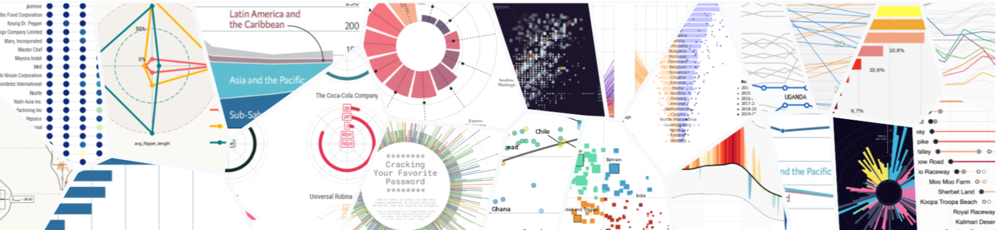
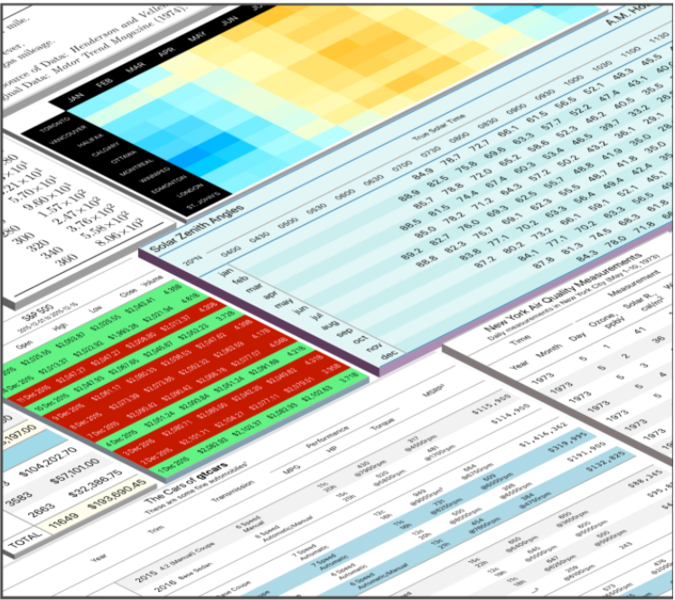

Data Visualisation

What is data visualisation?
Data visualisation is an interdisciplinary field that deals with the visual representation of data. The primary goal of data visualisation is to make it easier to assess smaller facets of the larger picture, such as identifying outliers, patterns, and trends in complex data.
Data visualisation is one of the fundamental steps of the data science process; it happens after data has been collected and processed, and before and after data is modelled. Data must be visualised and interpreted for conclusions to be made. In health and social care, data visualisation is essential for analysing massive amounts of service users’ and administrative data and for data-driven decision-making within and across health and social care organisations.
Data visualisation provides:
an effective means of communicating data to non-technical (and technical) audiences using visual information a way to better engage audiences with crucial and understandable information a mechanism to present data so that actionable data can be absorbed quickly for greater insights and faster decision-making Different types of data visualisation
Charts can be considered a catch-all term for data visualisations of all varieties, such as those shown above.
Figures are visuals that use varied forms and dimensions, including shapes, colours, sizes, and locations. Graphs are a common type of figure where information is presented in two dimensions: the x-axis (horizontal) and y-axis (vertical). Figures which are not graphs may be referred to as plots and include maps and Venn diagrams.
While tables tend not to be as colourful or eye-catching as other visuals, they can be used to clearly present large quantities of summary information. They are particularly useful when precision is required, such as when determining whether one value is higher than another.

An infographic is a combination of text, tables, and/or figures, is explicitly designed to guide the audience to a particular conclusion (the art known as graphical storytelling). They are often used as posters in marketing and research outreach to summarise the key themes of a suite of analyses. On the other hand, dashboards present data as objectively as possible to allow the audience to overview information at a glance.
Data visualisation tools in data science
Not meant to be an exhaustive list in any way, some of the most popular data visualisation tools are outlined below.
Microsoft Excel
The most simple tool for data visualisation for many of you will be using a piece of software you should all be familiar with: Microsoft Excel. Excel originally offered nine simple plot types: bar graphs, line graphs, pie charts, hierarchy charts, histograms, scatter plots, waterfall plots (usually used in financial analyses), maps, and tables (or pivot charts). Newer versions of Excel (2016 onward) offer a wider variety of chart types and templates.
Tableau
Tableau is a visual analytics platform that has drawn real traction in the last few years. Tableau has become very popular in industry because it is intuitive with a point-and-click interface and looks professional. Although the cost is relatively high, there is a 1-year free trial available for students, so this is a great time to get familiar with the software if you are interested. Here are a couple of graphs produced in under ten minutes. Tableau also has a gallery to browse, including Viz of the day.
Python
Python is a free, open-source programming language that can be used to conduct more complex analyses than Excel, and to create more customised tables and figures. matplotlib and seaborn are packages within Python that are designed to create nice-looking plots using default settings to minimise the necessary code. The matplotlib examples gallery and seaborn examples gallery show some of the plots you can make using the packages and provide the code to allow you to replicate it. Additionally, the Python Graph Gallery is an excellent resource with a collection of 100s of charts made with Python, as well as sections dedicated to more general topics like matplotlib or seaborn packages.
R
R, like Python, is another free, open-source programming language with great graphing abilities and will be the primary language used for this course. The package ggplot2 can be used to make most plot types within the core package. There are over 136 extension packages which have been developed to date, meaning the plot options are essentially endless! R Graph Gallery and the newer R Charts are both great websites to get some inspiration for what is possible with R and with ggplot2 and show both examples and code for various plots.